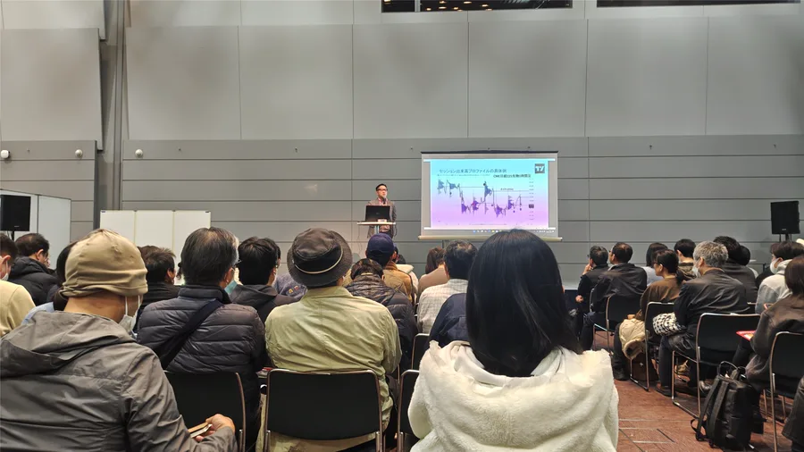
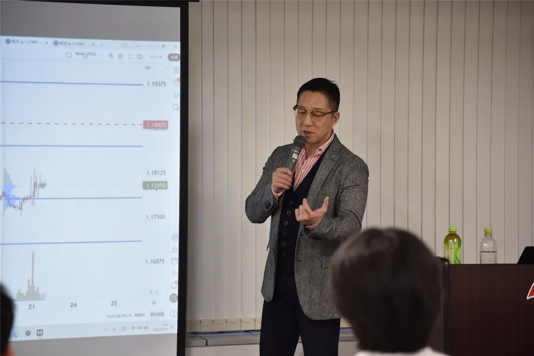

まずは無料ビデオ講座から
トレードLabで学ぶ「ネイキッドトレード」の考え方を、全4回の無料ビデオ講座「ディープインサイド」でお伝えしています。メールアドレスをご登録いただくと、すぐにご覧いただけます。
＼メール登録で特典プレゼント中／
無料ビデオ講座を受け取るトレードLab所長／
株式会社Trading Arms 代表取締役

『価格帯別出来高分析を使ったサポレジトレード』
どの価格帯に売買が集中したか（価格帯別出来高）から、支持線・抵抗線を読み解く方法を、TradingViewを使って解説した一冊です。


トレードLabで学ぶ「ネイキッドトレード」の考え方を、全4回の無料ビデオ講座「ディープインサイド」でお伝えしています。メールアドレスをご登録いただくと、すぐにご覧いただけます。
＼メール登録で特典プレゼント中／
無料ビデオ講座を受け取る